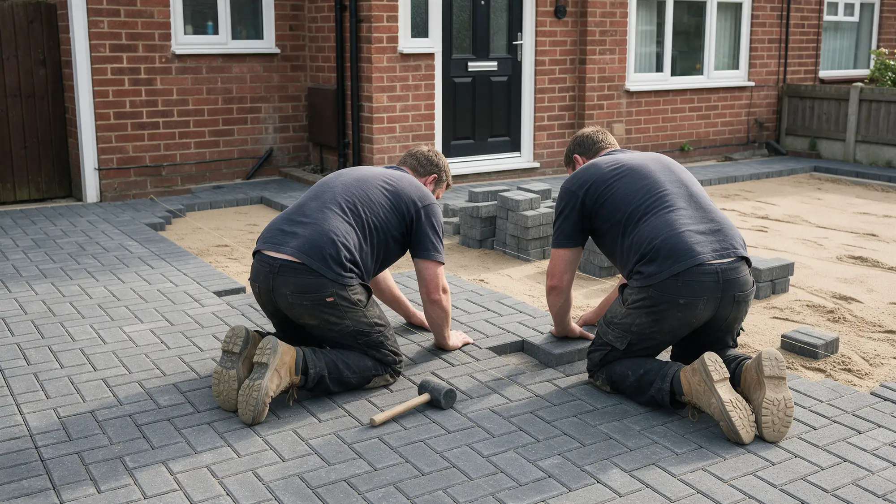
Driveways and patios · Bolton
Built from the
ground up.
Block paving, tarmac and resin drives, patios, dropped kerbs and the drainage that makes any of it work. Most of the job happens before the first block goes down, and that is the part we will talk to you about.
Surfaces
Four things we lay.
Concrete block paving
The workhorse. Lifts and goes back down, so a sunken patch or a cable trench is a repair rather than a scar.
Tarmac
One quiet surface, quick to lay, wants a proper edge to hold it in. A patch in it will always show a little.
Resin bound gravel
Gravel that stays put and lets water through. Wants a sound base under it, because you cannot lift a bit and put it back.
Sandstone and porcelain flags
Mostly patios and paths. Full mortar bed, pointed joints, and a fall away from the house.
Swatches drawn in the browser rather than photographed, so nothing here is pretending to be a product you can order.
What we do
Six kinds of job.
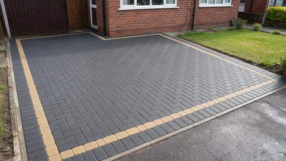
Generated photoBlock paving driveways
Dug out properly, a sub base that carries a car, and blocks laid to a line. The bit you see is the last day of the job and the smallest part of it.
Tarmac and resin driveways
Tarmac where you want one quiet surface and a good edge. Resin bound where you want gravel that stays where you put it and lets water through.
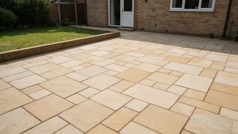
Generated photoPatios
Sandstone, porcelain or concrete flags on a full bed, falling away from the house, with the joints and the step down sorted before anybody sits on it.
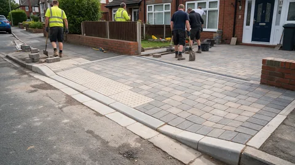
Generated photoDropped kerbs, through the council
The crossing from the road on to your drive. The council decides whether you can have one and who may build it, so that part comes first.
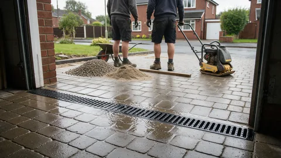
Generated photoDrainage for drives
Channel drains, soakaways, falls and permeable surfaces. Where the water goes is the question that decides most of a driveway job.
 Generated photo
Generated photoDriveway cleaning and repairs
Washing, re-sanding and sealing, sunken patches lifted and relaid, and the odd flag that rocks. Far more drives need this than need replacing.
How it works
Four steps, no doorstep deal.
You tell us what you have got
A call, the chat box or the form. What is there now, roughly how big, and whether you can already drive on to it or you are starting from a front garden and a kerb.
Somebody comes and looks
Levels, the fall, where the water can go, what is under the old surface where we can tell, and what the council side of it looks like if a crossing is needed. Half an hour, usually.
You get it in writing
The dig out depth, the sub base, the surface, the edges, the drainage and what happens to the spoil. Line by line, so you can hold it against anybody else's quote.
We build it and sweep up
Dig out, cart away, sub base, edges, surface, joints. Cones and tape while it is open, the road swept at the end of each day, and nothing left behind Sample.
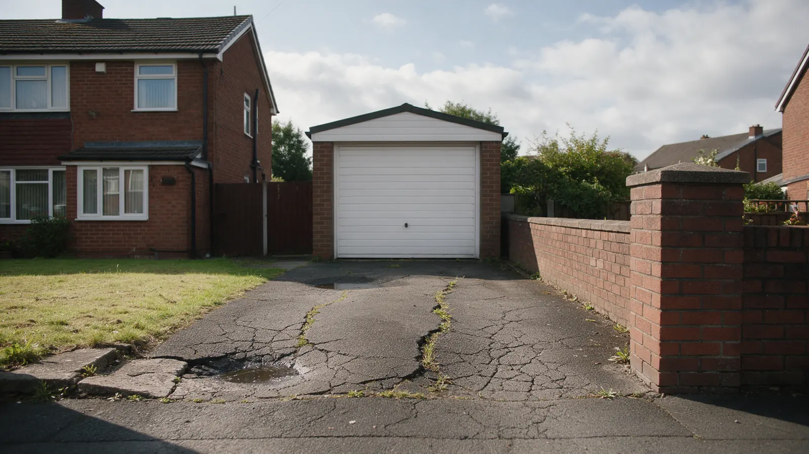
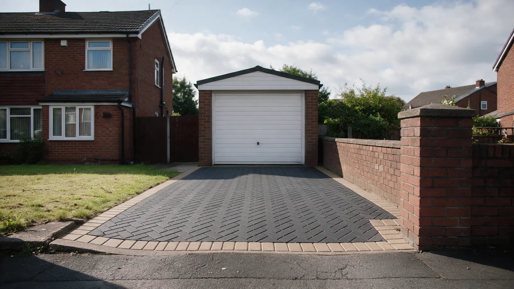
Illustrative, not a real job. Both pictures were generated for this demo from the same house, once tired and once done, so the wall, the gate post and the garage are the same in each.
Before and after
The dip tells you what went wrong.
Drag the slider. On the left, a tarmac drive that has crazed, split and sunk where the wheels sit. On the right, the same drive dug out and paved.
Look at where the old one failed. Not at the edges and not evenly, but in the broken patch where a car stands. That is a sub base that was too thin, laid on ground that was never dug out properly. No surface on earth saves you from that, which is why the first two days of a drive are spent on ground you will never see again.
See the rest of the workOur work
Sample jobs.
 Generated photoBlock paving going down in herringboneHorwich SampleGenerated photoCharcoal blocks, buff sett borderWesthoughton Sample
Generated photoBlock paving going down in herringboneHorwich SampleGenerated photoCharcoal blocks, buff sett borderWesthoughton Sample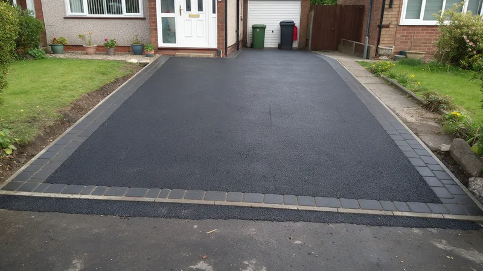
Generated photoTarmac with a block edgeFarnworth Sample Generated photoResin bound over a sound baseBlackrod Sample
Generated photoResin bound over a sound baseBlackrod Sample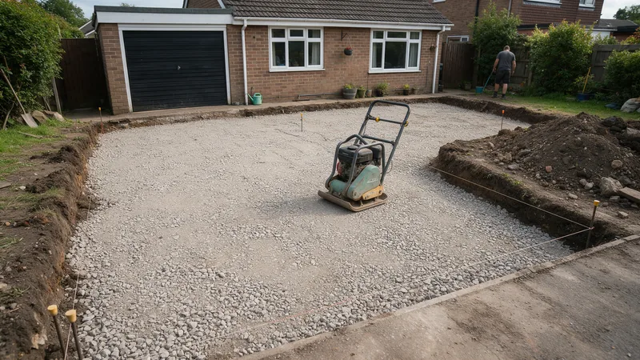
Generated photoSub base in, nothing pretty yetLittle Lever Sample Generated photoSandstone off the back doorHorwich Sample
Generated photoSandstone off the back doorHorwich Sample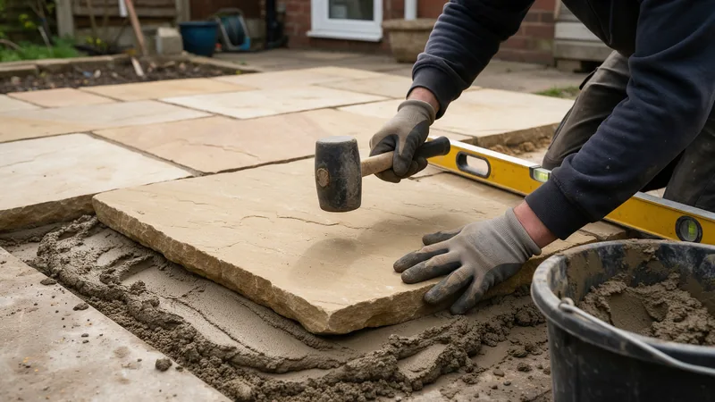
Generated photoFlags on a full mortar bedWesthoughton Sample Generated photoDropped kerb finished offFarnworth Sample
Generated photoDropped kerb finished offFarnworth Sample Generated photoChannel drain at the garageLittle Lever Sample
Generated photoChannel drain at the garageLittle Lever Sample Generated photoSoakaway crates going inBlackrod Sample
Generated photoSoakaway crates going inBlackrod Sample Generated photoHalf washed, half notHorwich Sample
Generated photoHalf washed, half notHorwich Sample Generated photoSunken patch lifted and relaidWesthoughton Sample
Generated photoSunken patch lifted and relaidWesthoughton SampleEvery job here is a made up sample with a generated picture. Tap one to see it bigger.
Where we work
Bolton and round about.
Based in Bolton Sample. These are the towns we cover most. Coverage is a sample for this demo. A bit outside it? Ask anyway, it depends what else is on that week.
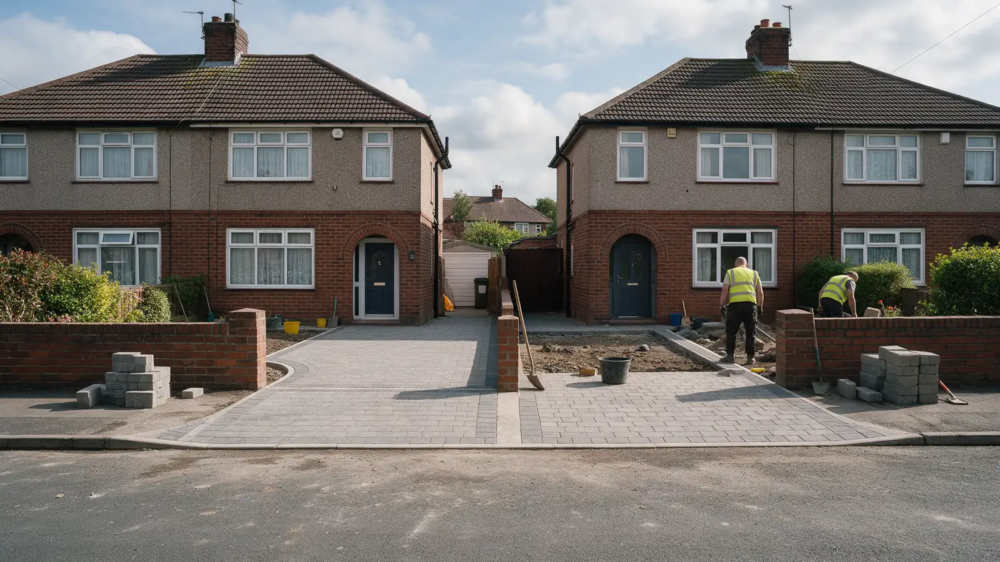
Generated photoWhat people say
Sample reviews.
Sample review
They spent two days on the bit you cannot see and one day on the bit you can, and explained why that was the right way round. The drive has not moved and the water goes where they said it would.
Donna, Horwich
Sample review
Rang about a sunken patch expecting to be told I needed the lot doing. Got told it was a dip in the sand under about a square metre of blocks, and that is what they did.
Ash, Westhoughton
Sample review
The dropped kerb side of it was the part I was dreading. They told me plainly that the council decides and who was allowed to do it, and did not promise me anything they could not.
Priya, Farnworth
Sample review
Old concrete drive, cracked and lifting. They dug the lot out rather than laying over the top of it, which two other firms had offered to do. Cost more and was obviously right.
Mal, Little Lever
Made up for this demo. Setthorn does not exist, so neither do its customers.
Questions
What people ask us first.
Do I need planning permission for a new driveway?
It depends on what you lay and where the water goes, and your council is the one to ask. The general position in England is that a new hard surface in a front garden does not need permission if it lets water through, or if the water runs off into a border, a lawn or a soakaway inside your boundary. Lay something solid that sheets water out on to the road instead, and over a few square metres you are normally into planning permission territory.
Round the back it is usually simpler. Listed buildings, conservation areas and flats have their own rules, and a few streets have conditions attached from when they were built. None of that is something a paving firm can decide for you, so ring the council or look at their website before you order anything. We will tell you plainly which of the three water answers your drive would have.
Block paving, tarmac or resin: which lasts?
All three outlast most people's expectations when the sub base under them is right, and all three fail early when it is not. The sub base is the honest answer to the question.
What differs is how they age and what happens when something goes wrong. Block paving can be lifted and relaid, so a sunken patch or a trench for a cable is a repair rather than a scar. Tarmac is one surface, quiet underfoot and quick to lay, but a patch in it always shows. Resin bound looks closest to loose gravel without the gravel ending up in the road, lets water through, and wants a sound base under it because you cannot lift a bit of it and put it back. There is a longer comparison under Advice.
How long does a driveway take?
An ordinary front drive is usually three to five days on site, and most of that is before anything that looks like a driveway appears. Day one and two are digging out, carting away and building the sub base. The surface goes down near the end.
What stretches it is what we find underneath, where the water has to go, and whether a dropped kerb has to be applied for first. Weather matters more for tarmac and resin than for blocks, because both want a dry base. We give you a start date and tell you honestly what would push it.
Do I need a dropped kerb?
If you want to drive over the footway to get on to your drive, yes. Driving over a full height kerb damages the kerb and the footway, and it is not something to do quietly and hope nobody notices.
A dropped kerb, or vehicle crossing, is applied for through your local council. They decide whether your house can have one, how wide it may be, and often which contractors are allowed to do the work on the public footway. Sight lines, trees, lamp posts, bus stops and junctions all come into it. So that application is the first job, not the last, and we will say so before anybody talks about blocks.
What happens to rainwater?
It goes into your own ground, through the surface, or into a drain with the drain owner's permission. Those are the three honest answers, and one of them has to be true before the first block goes down.
In practice that means a fall away from the house, a channel drain across the threshold or the mouth of the drive where the ground slopes the wrong way, and either a permeable surface or somewhere inside your boundary for the water to soak away. What it must not do is run off on to the footway or the road. There is a plain guide to all of this under Advice.
Can you lay over my old concrete or tarmac?
Sometimes, and we will tell you honestly which it is. A sound, level base with no cracking and enough height to lose can take a resin bound or tarmac overlay. Blocks and flags are a different matter, because they need their own laying course and the extra height has to come from somewhere.
The time to say no is when the old surface is cracked, lifting or sat on nothing. Laying over that buys you a smart looking drive for two years and the same problem back afterwards, except now it is more expensive to put right.
General guidance written for this demo, not advice on your house. Planning and dropped kerbs are decided by your council, not by us.
Advice
Worth reading first.
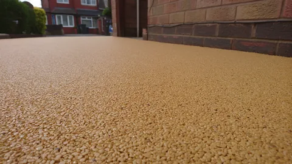
Generated photoBlock paving, tarmac or resin compared
Three surfaces, three sets of trade offs, and one question underneath all of them that nobody asks until the quotes land.
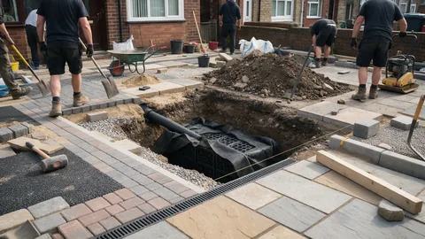
Generated photoFront gardens, drives and rainwater rules
A plain guide to why rainwater decides what you are allowed to lay at the front of a house, and why your council is the one to ask.
Generated photoLooking after a new driveway
What to do in the first year, what to leave alone, and the three jobs that keep a drive looking like it did on the last day.
About this demo
What this demo shows.
Setthorn is not a real firm. The site is here to show a driveways and patios firm what Clockwork AI builds, in six parts.
No prices here. What it would cost for your firm is a conversation, not a web page. The Clockwork number is in the bar at the top.
Thinking about the drive or the patio?
Tell us what is there now and your postcode and we will come and look at the levels. If something has sunk and somebody could trip on it, use the urgent line instead.